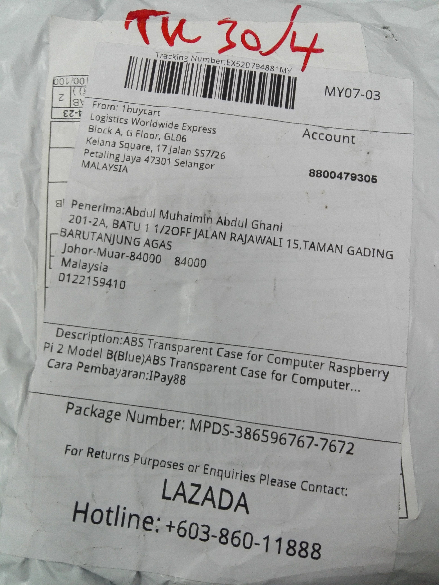
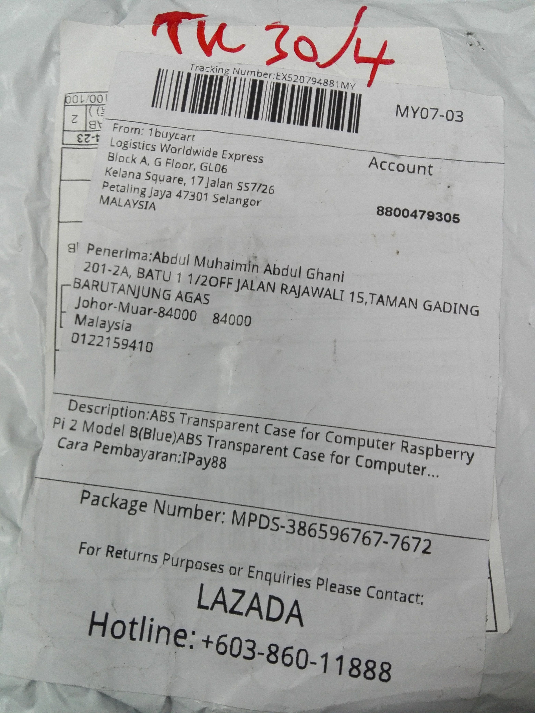

Raspberry Pi 3 - RP3
RP3
- Kenapa godek alat ini
- Gambaran komputer di pejabat
- Cari alat ini di google
- Cari panduan di kedai buku popular
- Mencari aksesori di ladaza eh salah lazada
Teknikal RP3
- Menggodek os yang disyorkan
- Pasang os dalam kad micro sd dalam ubuntu 16.04 dan win 7.
- Sambungan ke rangkaian setempat
- Main lagu
- Aturan ssh
- Penyambung kabel usb yang sesuai.
- Guna bola kuasa untuk hidupkan alat ini
- Plan jika terputus bekalan elektrik.
Bab 1.1. Kenapa godek alat ini
- Banyak komputer rosak di pejabat.
- Monitor, keyboard, mouse tersadai.
- Boleh jadi komputer dan touchskrin serentak.
- Boleh dibawa dalam beg kecil sahaja
Bab 1.2. Gambaran komputer di pejabat
Bab 1.3. Cari alat ini di google
Bab 1.4. Cari panduan di kedai buku popular
Bab 1.5. Mencari aksesori di ladaza eh salah lazada


 

Bab 2

Bab 2.1. Menggodek OS
Raspbian adalah yayasan rasmi. Muat turun di sini atau gunakan noobs, pemasang mudah kami untuk Raspbian dan banyak lagi.
 NOOBSNew Out Of the Box Software- satu operasi mudah
NOOBSNew Out Of the Box Software- satu operasi mudahsistem pemasang untuk pemula |
 RaspbianSokongan rasmi Sistem pengendalian
RaspbianSokongan rasmi Sistem pengendalianRaspberry Pi - berdasarkan Debian |
Bab 2.1. Pasang os yang lain
-
Ubuntu MATE
Ubuntu desktop
-
Snappy Ubuntu Core
Snappy Ubuntu Core for Developers
-
Windows 10 IoT Core
Windows 10 for the Internet of Things
-
OSMC
Open Source Media Centre
-
LibreELEC
Just enough OS for Kodi
-
PiNet
Classroom management solution
-
RISC OS
A non-Linux distribution
-
Weather Station
Raspberry Pi Oracle Weather Station
Bab 2.2.1. Pasang os dalam kad micro sd dalam ubuntu 16.04
Bab 2.2.2. Pasang os dalam kad micro sd dalam win 7.
Bab 2.3. Sambungan ke rangkaian setempat
Bab 2.4. Main lagu
- cd Music
- ls
- alsaplayer -start AnuarZain-Ketulusan-Hati.mp3
- b - mula , c - tutup
Bab 2.5. Aturan ssh
Bab 2.6. Penyambung kabel usb yang sesuai.

Bab 2.7. Guna bola kuasa untuk hidupkan alat ini
Bab 2.8. Plan jika terputus bekalan elektrik.
SUDAH HABIS DAA
- : www.amin007.org
- : al.amin007@yahoo.com
- : amin007.ledang
- : amin007_ledang
- : abdulmuhaiminabdulghaniamin007ledang
- :
- : amin007
- : aminledang
- : amin800507
- : user/abdmuhaimin